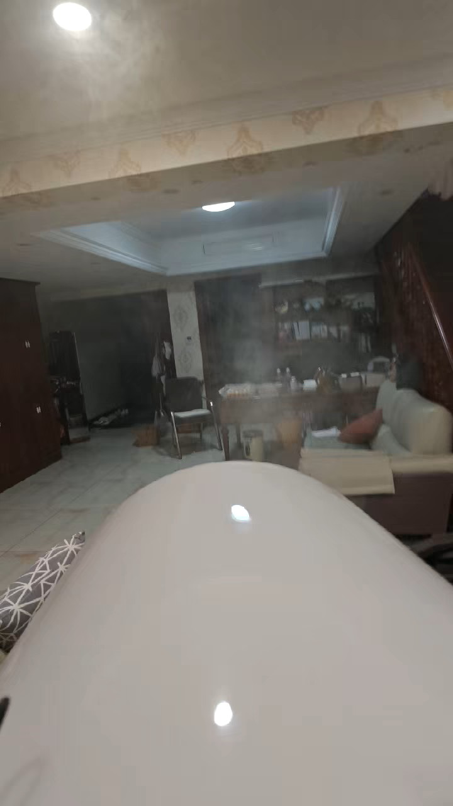

Air Vortex
Force Wave
The audience sees an air ring hit a target or carry fog across space, then traces how shape and push strength affect the vortex.
CategoryPhysics
PresenterVortex Team
Science principleVortex rings, airflow, pressure pulse
Safety noteUse a clear target lane and keep faces away from the cannon opening.
Project video
Project video 2